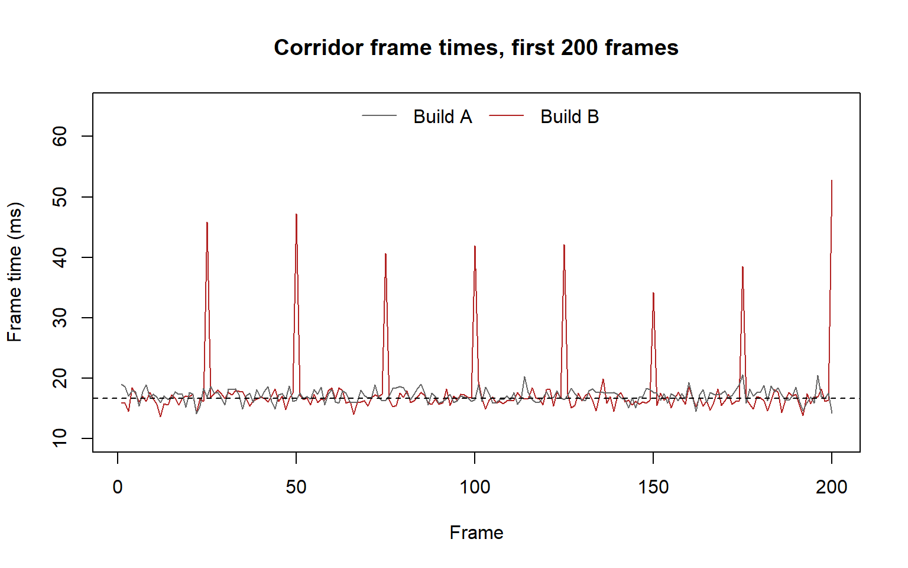
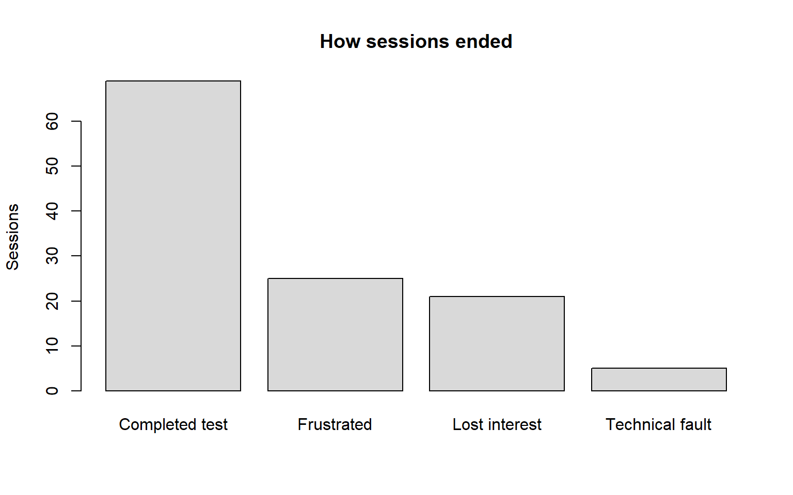
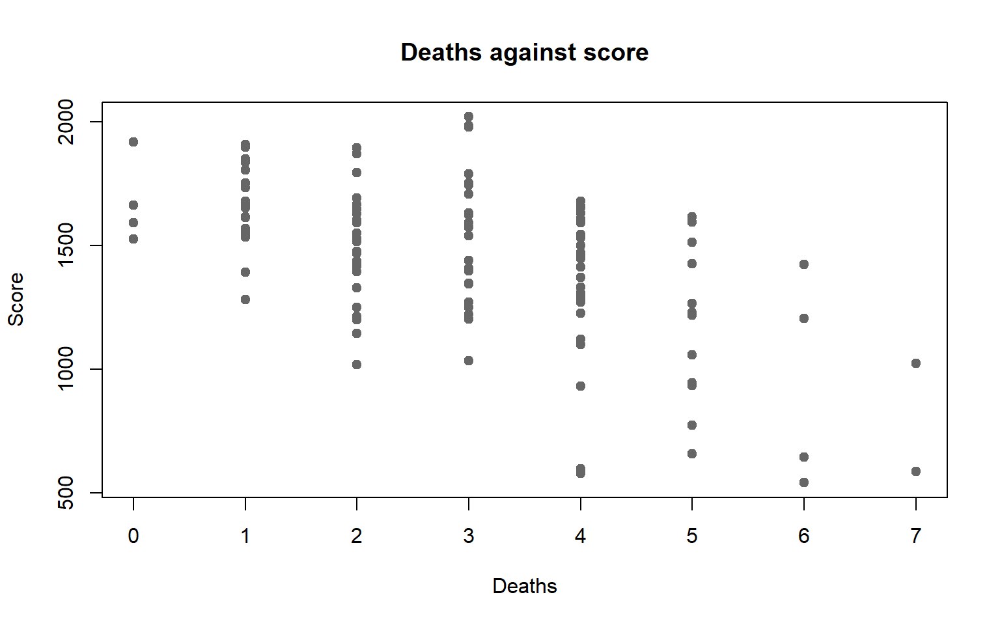

explain why an average on its own cannot describe a playtest;
read a standard deviation as the typical distance of a player from the mean;
describe a distribution by its centre, spread, skew and outliers;
say whether an outlier is an error, an extreme player or the finding itself;
read the mean, median, standard deviation and high percentiles together and say what each adds;
draw hist(), boxplot(), barplot() and plot() in base R and say what each one is for.
Why This Matters for Playtesting
Every design question is really a question about players, plural, and players differ. A level that takes eight minutes on average can be a level everyone finishes in eight minutes, or a level half the testers finish in four and the other half abandon. Those are different games with different fixes, and the average cannot tell them apart.
The players you design for are rarely the average player. The ones who quit, the ones who get stuck, the ones whose machine stutters: they live in the edges of the distribution, and the edges are exactly what a mean averages away.
Variation is information, not noise. When two builds differ in how spread out their players are, that difference is often the finding. A build that tightens the spread has made the experience more consistent, even if the average has not moved.
Variation Between Players
The variation in a variable is how much its values differ from one another. Some of it is the game: a harder route produces more deaths. Some of it is the player: skill, experience and patience vary before anyone touches your build. You cannot remove the second kind, so you have to measure it.
The standard deviation is the typical distance of a value from the mean. A small standard deviation means players cluster tightly around the average; a large one means the average is a poor guide to any individual. It is in the same units as the data, so a standard deviation of 3 ms on a frame time is directly comparable to the 16.7 ms a 60 FPS frame is allowed.
Standard deviation belongs to the mean. It measures distance from the mean, so it inherits the mean’s weakness: a few extreme values inflate it. For skewed data, the interquartile range from the previous notes is the better description of spread.
Distributions and Skew
A distribution is the full pattern of values: which ones occur, and how often. A histogram draws it. Every summary statistic is an attempt to describe a distribution in one number, and every one of them fails for some distribution.
Skew is a distribution leaning to one side. A right skew has a long tail of large values: most frames are quick, a few are very slow. A left skew has a long tail of small values: most players stay for the full session, a few leave early. The mean is pulled towards the tail; the median is not. That is why the gap between them tells you which way the data leans.
Game data is rarely symmetric. Times have a floor and no ceiling. Match lengths have a ceiling set by the timer. Ratings bunch against the ends of the scale. Expect skew and check for it, rather than assuming the bell shape from school statistics.
Outliers
An outlier is a value far from the rest. The boxplot’s convention is any point more than one and a half box-widths beyond the edge of the box, and R draws those points individually. That rule is a prompt to look, not a verdict.
An outlier is one of three things, and the response to each is different:
The outlier is
Example
What you do
An error
A session length of −3 minutes; a rating of 7 on a 1–5 scale
Fix it or remove it, and record that you did
An extreme but ordinary player
One tester who never died
Keep it; report the median rather than the mean
The finding
A cluster of games that collapse early
Keep it and investigate it; it is why you ran the test
Never delete an outlier because it is inconvenient. Every row you drop is a decision with a consequence (rule 6), and the value most tempting to drop is often the one the playtest was run to find (rule 9).
Reading Several Summaries Together
No single statistic describes a distribution, but a small set of them, read together, usually does.
Summary
What it tells you
What it misses
Mean
The total spread evenly across players
Skew, clusters, tails
Median
The middle player
How extreme the extremes are
Standard deviation
Typical distance from the mean
Which direction the spread goes
IQR
Width of the middle half
Everything outside the middle half
95th or 99th percentile
How bad the worst few per cent get
The typical case
Where the summaries disagree, look at the picture. Mean and median apart means skew. A large standard deviation with a small IQR means a few extreme values. A normal median with a bad 99th percentile means a rare problem that the average will never show. Each disagreement is a pointer to a specific shape, and the histogram confirms which one (rule 4).
Worked Examples
Which build runs better? The Tidebreak team captured 4500 frames from each build, split across 3 level zones. The frame-rate counter reports Build A at 58.8 FPS and Build B at 59 FPS. By the number everyone quotes, Build B is marginally the faster build.
The median agrees: 16.99 ms per frame for Build A, 16.63 ms for Build B. So does the 95th percentile: 18.8 ms against 18.4 ms. Three summaries, one verdict.
The 99th percentile disagrees. Build A’s is 19.5 ms; Build B’s is 39.4 ms, 2.0 times as long. The standard deviation says the same thing more quietly: 1.05 ms for Build A, 3.4 ms for Build B.
Count the frames slower than 30 FPS (33.3 ms). Build A has 0. Build B has 60, every one of them in the Corridor zone, and exactly 25 frames apart: at 60 FPS, a hitch 2.4 times a second for as long as the player is in the corridor.
corridor_a <- frames$ms[frames$build =="A"& frames$zone =="Corridor"]plot(corridor_b[1:200], type ="l", col ="firebrick",ylim =c(10, 65),main ="Corridor frame times, first 200 frames",xlab ="Frame", ylab ="Frame time (ms)")lines(corridor_a[1:200], col ="grey40")abline(h =1000/60, lty =2)legend("top", legend =c("Build A", "Build B"), horiz =TRUE,col =c("grey40", "firebrick"), lty =1, bty ="n")

Why the mean cannot see it. The slow frames are 1.3% of Build B’s total. Spread across every frame of the capture, they barely move the mean, and Build B’s faster frames elsewhere more than make up for them. The 95th percentile sits below the problem because the problem is rarer than one frame in twenty. Only a summary aimed at the worst one per cent can see it, which is why the 99th percentile is the standard figure in performance capture. The mean is not approximately wrong here. It is structurally incapable of showing the thing players experience.
R Demonstrations
Base R first, then the tidyverse equivalent for the grouped summary.
boxplot() with y ~ group puts one box per group on the same axis, which is the quickest way to compare distributions. Build A’s box is wider: its IQR is 16.3 minutes against 10.9 for Build B. 88% of Build A sessions were still going at minute 11, and 68% at minute 13. The spread is where Build A loses its players.
barplot(table(sessions$quit_reason),main ="How sessions ended", ylab ="Sessions", col ="grey85")

barplot() draws counts of a categorical variable. Give it the output of table(), not the raw column.
plot(sessions$deaths, sessions$score,main ="Deaths against score", xlab ="Deaths", ylab ="Score",pch =19, col ="grey40")

plot() with two numeric variables draws a scatterplot: one point per session. Read it for direction and for scatter. How strongly two variables are related is Week 3’s subject.
group_by() splits the data and summarise() computes one row of summaries per group. This is the several-summaries-together table from the worked example in six lines, and it is the base R tapply() repeated five times.
Interpretation Guidance
What the data shows. Build A and Build B have near-identical mean frame times. Build B has 60 frames slower than 30 FPS, all in the Corridor, and Build A has 0.
What the analysis suggests. Something in Build B’s Corridor costs a frame at a fixed interval. The regular spacing points at a periodic job, such as streaming, garbage collection or a timed effect, rather than at scene complexity.
What can legitimately be concluded. Build B introduced a hitch confined to the Corridor, and a report that quotes average FPS alone would have shipped it. The cause is not established by frame times; that needs a profiler.
Quote the tail with the centre. For anything where the worst case is what players remember, such as frame time, load time or matchmaking wait, report the median and a high percentile together. “Median 16.6 ms, 99th percentile 39 ms” is a performance report. “59 FPS” is a slogan.
Common Mistakes
Reporting average FPS as the performance result. It is the number the engine shows and the number least able to show a hitch.
Comparing groups by their means alone. Two builds with the same mean can be different games (rule 7). Draw the boxplots side by side.
Deleting outliers to clean the chart. Find out which of the three kinds each one is first. The Sentinel’s low scores in Describing What You Have are the finding, not the noise.
Quoting a standard deviation for skewed data. It measures distance from the mean, and on skewed data the mean is in the wrong place. Use the IQR.
Stopping at the 95th percentile. A problem affecting one frame in a hundred is invisible at the 95th. Match the percentile to how rare the problem could be.
Reading a scatterplot as proof. A downward cloud of points shows that two things move together in this sample. It does not say which one causes the other.
Short Practice Activities
Each takes two or three minutes.
1. Compute the 99th percentile of frame time for each zone in Build B. Which zone is responsible?
The Corridor, at 48.5 ms. The other two zones are at most 19.2 ms. Splitting a summary by where it happened turns “Build B stutters” into “Build B stutters in one place”, which is a ticket someone can fix.
2. Redraw the quit-reason bar chart with one bar per build side by side. What does it add to the single bar chart?
20 Build A sessions ended in frustration against 5 in Build B. The single chart showed how often players left frustrated; the split shows which build they left.
3. Using tapply(), find the median score for each number of deaths. Does the pattern in the scatterplot hold up?
Broadly, yes: sessions with no deaths have a median score of 1627, and sessions with 7 deaths have 804.5. Check how many sessions sit behind each median with table(sessions$deaths) before trusting the ends of that list (rule 8).
Summary
An average describes a group; it does not describe any player in it.
The standard deviation is the typical distance from the mean. Use the IQR when the data is skewed.
Skew pulls the mean towards the tail. Game data is rarely symmetric.
An outlier is an error, an extreme player or the finding. Work out which before doing anything to it.
Read several summaries together, and where they disagree, draw the picture.
For performance data, quote a high percentile. Both builds run at about 59 FPS, and only one of them stutters.
Links to Relevant Reference Material
Ten Rules: rule 4 (look at the shape before you quote the average), rule 7 (compare distributions, not averages) and rule 9 (sometimes the rare value is the whole story)
A producer asks for “one number” to show the build’s performance has improved. Which number do you give, and what do you say about the numbers you left out?
Build A’s session lengths are more spread out than Build B’s. Is a narrower spread always better for a game? Give a case where it would not be.
You find three sessions with a score of zero. What would you check before deciding they are errors, and what would change your mind?
The Corridor hitch affects 1.3% of Build B’s frames. At what point does a rare problem stop being worth fixing, and who should decide?